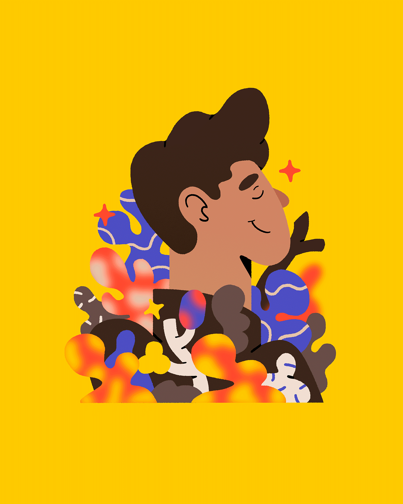
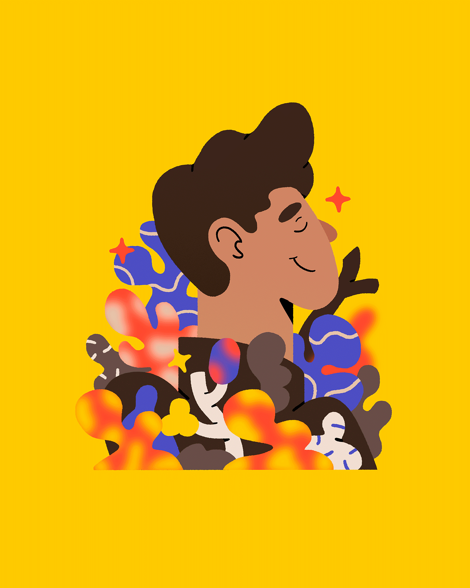

Nostalgia
Nostalgia relates to the melancholy feeling of missing someone or some moment, it is an internal wish to revisit good old moments that may never happened, to yearn for distant blurred past days.
Nostalgia is a conceptual project that explore that feeling, creating an imaginary environment in which we’d be able to relive our best memories in one sip.
Year: 2021
Art Direction: Lucas Wakamatsu e Bruno Faiotto
Illustration: Lucas Wakamatsu
3D:: Bruno Faiotto
Fonts: Fraunces, Gimlet Display e Campaign.


 
